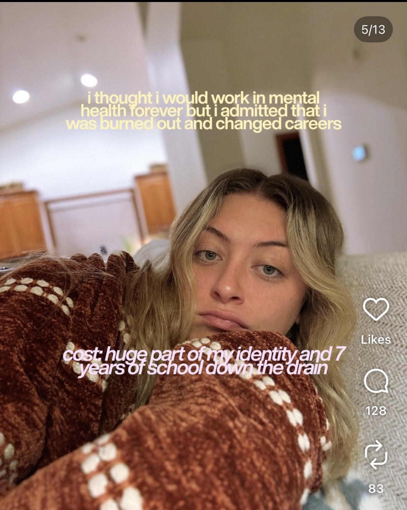
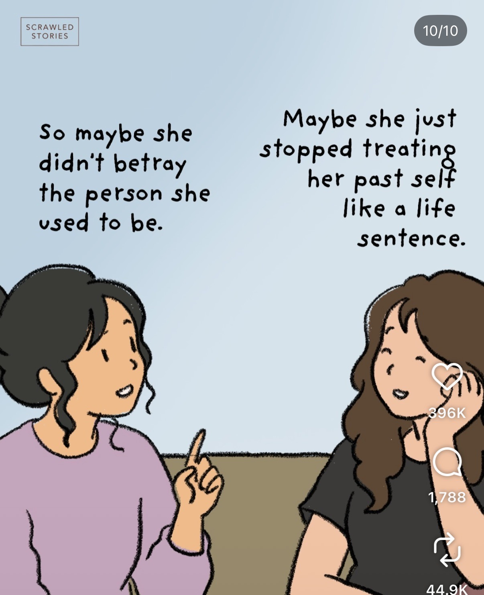

At some point in time, we learned that being a young adult meant having a plan all figured out and if that plan changed, it meant we were failures.

Posts about choosing a career, changing paths, feeling uncertain, and figuring out what work and purpose can look like in your twenties.
At some point in time, we learned that being a young adult meant having a plan all figured out and if that plan changed, it meant we were failures.

I think this screenshot points at the fact that some of us feel like our young adult identity is very closely tied to our careers and also highlights the conception that what we do as young adults is what we need to do for the rest of our lives. But this screenshot allows us to think that maybe that is not true for a lot of people.

Sometimes as people grow, directions change. Your plans that you once had don't need to be a "life sentence." Those can change too. This doesn't mean you aren't adulting.